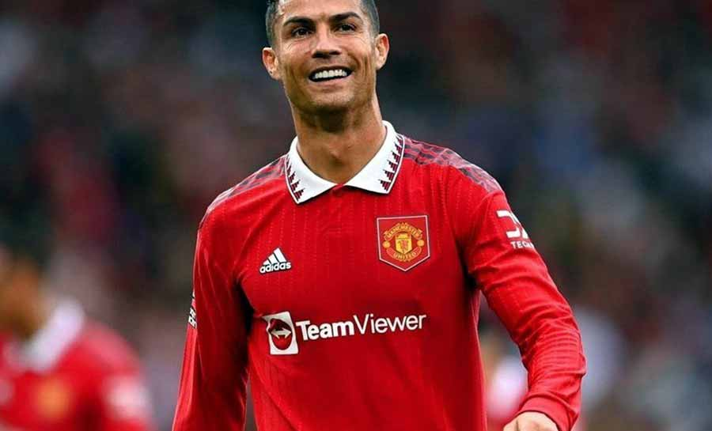

Cristiano Ronaldo
Jogador de Futebol

Voltar
-
- Supertaça de Portugal pelo Sporting: 2002
- Mundial de Clubes da FIFA pelo Manchester United: 2008
- Liga dos Campeões da UEFA pelo Manchester United: 2007–08
- Campeonato Inglês pelo Manchester United: 2006–07, 2007–08 e 2008–09
- Copa da Inglaterra pelo Manchester United: 2003–04
- Copa da Liga Inglesa pelo Manchester United: 2005–06 e 2008–09
- Supercopa da Inglaterra pelo Manchester United: 2007
- Mundial de Clubes da FIFA pelo Real Madrid: 2014, 2016 e 2017
- Liga dos Campeões da UEFA pelo Real Madrid: 2013–14, 2015–16, 2016–17 e 2017–18
- Supercopa da UEFA pelo Real Madrid: 2014 e 2017
- Campeonato Espanhol pelo Real Madrid: 2011–12 e 2016–17